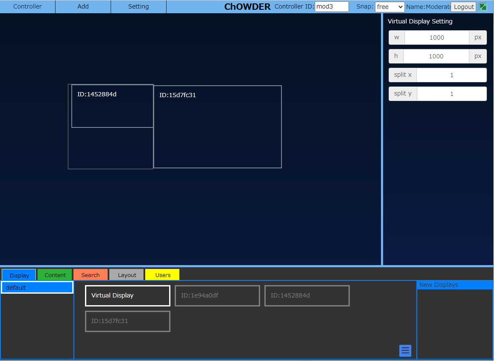

ChOWDERのホーム画面
ホーム画面説明
ChOWDERへのアクセスは、前述のアプリケーション起動を行った後、Webブラウザのアドレス欄に「 http://localhost/
」と入力することでアクセス出来ます。
アクセスすると上述のホーム画面が表示されます。
ChOWDERは、以下の2つのモード(Display, Controller)を持っており、ホーム画面でどちらのモードを使うかを決定します。
-
Controller: ログイン画面の後、コントローラ画面へと遷移します。
-
Display : ディスプレイ画面へと遷移します。
上記の通り、アクセスしたPCを「コントローラ」として使用するか、 「ディスプレイ」として使用するかを選択することができます。
ログイン画面
概要
ログイン画面では、「コントローラ」でユーザーロール（権限）、表示名、パスワードの入力を行います。
 コントローラーログイン画面では、「コントローラ」でユーザーロール（権限）、表示名、パスワードの入力を行います。
「コントローラ」と「パスワード」が一致した場合に限り、ログインが可能です。表示名は自由に入力することが出来ます。
コントローラーログイン画面では、「コントローラ」でユーザーロール（権限）、表示名、パスワードの入力を行います。
「コントローラ」と「パスワード」が一致した場合に限り、ログインが可能です。表示名は自由に入力することが出来ます。
コントローラ画面の操作
概要
コントローラは下図の通りとなっております。

接続状態について
画面右上部分には、サーバーとの接続状態がアイコンで表示されます。
 *サーバーとの接続ありの状態*
*サーバーとの接続ありの状態*
 *サーバーとの接続が無い状態*
*サーバーとの接続が無い状態*
Virtual Display Screenについて
中央はVirtual Display Screenと呼ばれ、ChOWDERに接続された ディスプレイの操作、Contentsの移動、操作、削除等を行う 汎用スペースとなっております。
 *VirtualDisplayScreenの凡例*
*VirtualDisplayScreenの凡例*
メインメニュー
上部に配置されたメニュー
画面上部に配置されたメニューから各種操作が行えます。
 *画面上部領域*
*画面上部領域*
Displayボタン
下図に示すとおり、Displayボタンを押下すると、 Displayウィンドウを開くことができます。
 *Displayボタン押下時*
*Displayボタン押下時*
Addメニュー
Addメニューからは各種コンテンツを追加することができます。
操作方法の詳細については コンテンツの追加
を参照してください。
 *Addメニュー展開時*
*Addメニュー展開時*
Settingメニュー
Settingメニューからはリモートカーソルの表示状態切替や、言語の切り替え、管理画面の表示が行えます。管理画面の表示は管理者のみ可能です。
管理画面については コントローラ権限と管理画面
を参照してください。
 *Settingメニュー展開時*
*Settingメニュー展開時*
リモートカーソルは以下のように表示されます。
 *リモートカーソル*
*リモートカーソル*
ディスプレイに表示されるリモートカーソルのサイズを、VirtualDisplayを基準としたピクセル数で指定します。
 *カーソルサイズ*
*カーソルサイズ*
言語の切り替えは以下のメニューで行います。
 *言語切り替え*
*言語切り替え*
ホームに戻る
下図のように、ChOWDERと書かれた部分をクリックすると、 ホームに戻ることができます。
 *タイトル名のクリックでホームに戻る*
*タイトル名のクリックでホームに戻る*
コントローラIDの設定
下図の部分で、コントローラIDの設定を行うことができます。
コントローラIDを変更すると、別のコントローラとして認識されるので、パスワードの再入力が求められる場合があります。
 *コントローラIDの設定*
*コントローラIDの設定*
コントローラ権限と管理画面
コントローラ権限
コントローラは以下の種別があり, 各コントローラごとにパスワード及びアクセス権限を設定することができます。
| 種別 | 概要 | アクセス |
|---|---|---|
| 管理者 | 全ての機能にアクセスできる管理者 | 管理画面を含む全ての機能 |
| グループ | 各コンテンツグループごとの権限 | 管理者画面で設定したアクセス制限に従うデフォルトでは, 自グループとdefault のみの編集閲覧が可能 |
| Moderator | ほぼ全ての機能にアクセスできるサブ管理者 | 管理画面を含む全ての機能 |
| Attendee | コンテンツ追加・操作が出来る一般ユーザー | 管理画面以外の全ての機能 |
特殊な権限
Guest及びDisplayはパスワード無しで利用でき、アクセス権限のみを設定することができます。
| 種別 | 概要 | アクセス |
|---|---|---|
| Guest | パスワード無しで入れるGuest | 管理者画面で設定したアクセス制限に従うデフォルトでは, default のみ編集閲覧が可能 |
| Display | Display 接続時の権限 | 管理者画面で設定したアクセス制限に従うデフォルトでは, 全てのグループの編集閲覧が可能 |
管理画面
コントローラーに, 管理者でログインすることで、Management メニューから, 管理画面にアクセスすることができま
す. 管理画面では, コントローラ権限や, 各種設定を行うことができます。
 *管理者ログイン時のメニュー*
*管理者ログイン時のメニュー*
 *管理画面*
*管理画面*
DB 管理
DB 管理では, 保存領域の新規作成, 切り替え, 名前変更, 削除, 初期化, を行えます。ただし, 最初に自動で作ら
れるdefault という保存領域については, 名前変更及び削除は行えません。
 *DB 管理*
*DB 管理*
履歴管理
履歴管理では, コンテンツの差し替え履歴の最大保存数を設定できます。 各コンテンツごとに, ここで設定した数だけ,
履歴が保存されます。 この値は, グローバルな設定値で, DB を変更した場合でも同じ値が適用されます。
 *履歴管理*
*履歴管理*
閲覧・編集権限の設定
閲覧・編集権限の設定では, コントローラごとの権限の設定が行えます。
 *閲覧・編集権限の設定*
*閲覧・編集権限の設定*
- 設定対象コントローラを選択します。
- 選択中のコントローラが, 編集可能なコンテンツグループ, 及び, 閲覧可能なコンテンツグループを選択します。「全て」を選択した場合は, 新規に作成されたグループも閲覧・編集対象となります。
- 選択中のコントローラが, 編集可能なサイトを選択します。「全て」を選択した場合は, 新規に作成されたサイトも閲覧・編集対象となります。
- 選択中のコントローラに対して, グループの編集やDisplayを許可するかどうか設定します。
パスワードの設定
パスワードの設定では, コントローラのパスワード変更を行えます。
管理者のパスワードを変更する場合のみ, 変更前のパスワードが必要となります。
 *パスワードの設定*
*パスワードの設定*
 *パスワードの設定(管理者以外）*
`Moderator`及び `Attendee`については、この設定でパスワードを設定するまでログインが出来ません。`Moderator`及び
`Attendee`権限を使用する場合は、必ず前もってAdmin権限ユーザーでパスワード設定を行ってください。
*パスワードの設定(管理者以外）*
`Moderator`及び `Attendee`については、この設定でパスワードを設定するまでログインが出来ません。`Moderator`及び
`Attendee`権限を使用する場合は、必ず前もってAdmin権限ユーザーでパスワード設定を行ってください。
ディスプレイ設定
ディスプレイ設定では, コンテンツ配信許可設定を変更できます。
許可されたディスプレイのみに配信されます。